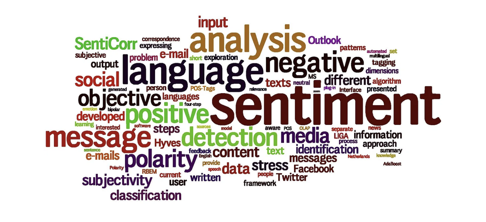

In sentiment analysis, the quality of input data can significantly influence the accuracy and effectiveness of the final outcomes. Analyzing texts, given their concise nature and informal language, presents unique challenges. This blog post details my approach to preprocessing texts to enhance sentiment analysis. Through a series of carefully designed steps, I aim to transform raw text data into a clean, analyzable format, setting the stage for accurate classification.

First, I removed any URLs from the tweets since they do not contribute to sentiment analysis and only add noise and irrelevant information to the text.
Next, I tokenized the tweets by splitting them into individual words. Tokenization allows for processing the text at a detailed level, treating each word as a separate entity, which is crucial for the cleaning and analysis that follows.
After tokenization, I applied text cleaning steps to refine the data further. This included removing stopwords—common words like “the,” “and,” “is,” which do not carry significant sentiment information. Eliminating these words helps reduce textual noise and focuses the analysis on more impactful words that convey sentiment.
I also removed special characters, such as punctuation marks and symbols, from the text. These characters do not aid in sentiment analysis and can hinder the performance of further analyses.
Additionally, I performed lemmatization on the text, which reduces words to their base or root forms. This consolidates similar words and reduces dimensionality, improving the model’s ability to generalize across different variations of words. For instance, words like “running,” “ran,” and “runs” are all reduced to the base form “run.”
By applying these text preprocessing techniques, I transformed the raw tweet data into a clean and standardized format. This preparation is crucial for accurate sentiment analysis as it helps to eliminate noise, reduce dimensionality, and concentrate on the most relevant text features. The preprocessed tweets are now ready for further analysis and sentiment classification using suitable models.
Before creating the preprocessing function, it’s essential to set up the environment with the required packages. This includes loading libraries and downloading necessary data for text manipulation.
[nltk_data] Downloading package stopwords to
[nltk_data] /Users/solomoneshun/nltk_data...
[nltk_data] Package stopwords is already up-to-date!
[nltk_data] Downloading package punkt to
[nltk_data] /Users/solomoneshun/nltk_data...
[nltk_data] Package punkt is already up-to-date!
[nltk_data] Downloading package wordnet to
[nltk_data] /Users/solomoneshun/nltk_data...
[nltk_data] Package wordnet is already up-to-date!
True
nltk: A toolkit for natural language processing that provides capabilities for tokenizing, stemming, and more.
re: Helps in removing punctuation and non-alphabetical characters using regular expressions.
stopwords: Common words in English that do not add much meaning to sentences and are often removed in the preprocessing step (eg. is, the, a, and, an, …).
Defining the Text Preprocessing Function
The main function, preprocess_text, cleans up the text data by removing unwanted characters, converting text to lowercase, removing stopwords, and lemmatizing the words.
def preprocess_text(data): processed_data = [] stop =set(stopwords.words('english')) # Set of English stopwordsfor k inrange(len(data)):# Remove non-alphabet characters and convert to lowercase review = re.sub('[^a-zA-Z]', ' ', data[k]).lower().split()# Lemmatize words and remove stopwords stem_list = [WordNetLemmatizer().lemmatize(i) for i in review ifnot i in stop]# Rejoin words to form the final cleaned text final_text =' '.join(stem_list) processed_data.append(final_text)return(processed_data)
Steps Explained:
Regular Expression: re.sub('[^a-zA-Z]', ' ', data[k]) removes any character that is not a letter.
Lowercasing & Splitting: Converts the text to lowercase and splits into individual words.
Lemmatization: Reduces words to their base or root form.
Stopwords Removal: Filters out common words that are unlikely to contribute to sentiment analysis.
To demonstrate the functionality, the preprocessing function is applied to a sample dataset containing reviews. This will output the cleaned versions of the input reviews, showing how punctuation, common words, and case have been normalized.
sample_text = ["Wow! This place is amazing.. Visit @ 100% times; best meals ever!! :)"]cleaned_text = preprocess_text(sample_text)print(cleaned_text)
['wow place amazing visit time best meal ever']
Creating a Larger DataFrame and Cleaning Texts
Next, we create a larger DataFrame with 20 sample reviews, ratings, and IDs, and apply the function to clean the review texts.
# Generating sample datadata = {'Review': ["Love this place, will come again!", "Not clean, very bad experience!","Best experience ever, highly recommend!", "Worst place I have been to!","Just okay, nothing special.", "Fantastic service and food!","Would not recommend this place to anyone.", "Great location, mediocre food.","Terrible customer service.", "Amazing atmosphere, will return!","Overpriced for the quality.", "Perfect spot for a weekend getaway!","Dirty rooms and rude staff.", "Exceptional service and amenities!","Too noisy and crowded.", "Peaceful and relaxing environment.","Unfriendly staff and bad food.", "Loved the outdoor setting!","Cancellation policy is too strict.", "Excellent choice for families!" ],'Rating': [5, 1, 5, 1, 3, 5, 1, 3, 1, 5, 2, 5, 1, 5, 2, 4, 1, 4, 2, 5]}# Creating the DataFramereviews_df = pd.DataFrame(data)# Applying the text preprocessing functionreviews_df['Cleaned_Review'] = preprocess_text(reviews_df['Review'].tolist())reviews_df